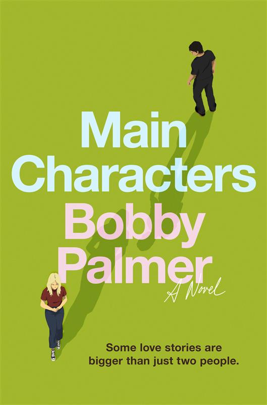

B o o k s h e l f

Main Characters by Bobby Palmer, featuring two illustrated characters, a man and a woman, walking away from each other against a green background.">Main Characters
Currently on: Chapter 8
Last updated: October 3, 2026
So far, I'm really enjoying the author's creative approach to storytelling has been so interesting to follow. If you haven't read it yet, Main Characters follows a love story without ever touching the love interests' point of view. Each chapter is narrated by an outside character - some of them close to the main characters, some of them just strangers who happened to observe a conversation or interaction. I have never experienced anything quite like it. I'm interested to get further into the narrative and see how the author continues to establish the inner monologue of these characters through the interactions they have with side characters.
Recent Reads
| Book Title | Genre | Author | Quick Review | ☆☆☆☆☆ |
|---|---|---|---|---|
| Sunrise on the Reaping | Dystopian Fiction | Suzanne Collins | Definitely my favorite of the two prequels. Hammitch's story was gut-wrenching. The character and journey parallels between Hammitch and Katniss are heartbreaking. Seriously - what a truly terrible game. | ★★★★★ |
| Tempests and Tea Leaves | Fantasy Romance | Rachel Morgan | This book was an easy read. It was nothing groundbreaking in world-building or character development, but it was a decent narrative with likable characters that you rooted for and knew would end up together. | ★★★☆☆ |
| Seek the Traitor's Son | Dystopian Fiction | Veronica Roth | I did not know anything about this new Roth book going into it, but I thoroughly enjoyed the new universe she is developing. The bodyguard trope is overplayed at the moment, but she made it feel fresh between our oath-sworn interests. There were quite a few surprisingly somber moments that reminded me why I appreciated her writing intiially. | ★★★★☆ |
| The Dead Romantics | Paranormal Romance | Ashley Poston | This book was a delightful surprise that ended up far better than I was expecting. The main character was well-developed, though the love interest could've been given more. The family business aspect was crucial in adding depth to the story. The main character's personal struggles with her family, her talents, and her critics draws in readers quite easily. | ★★★★☆ |